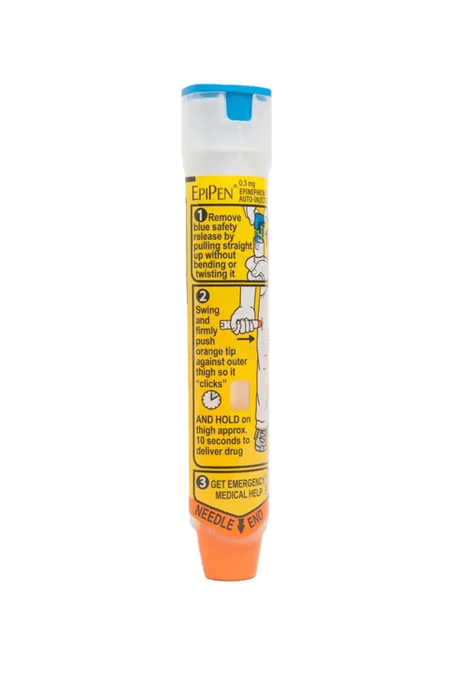
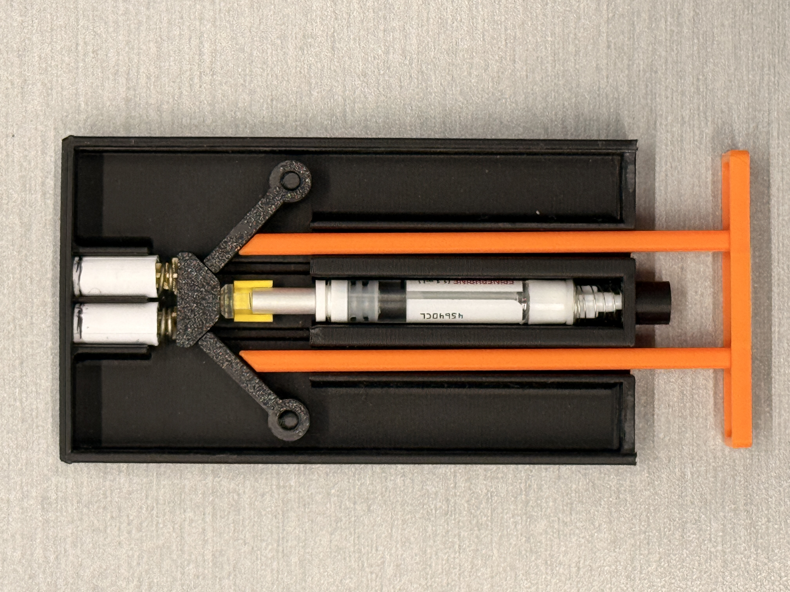
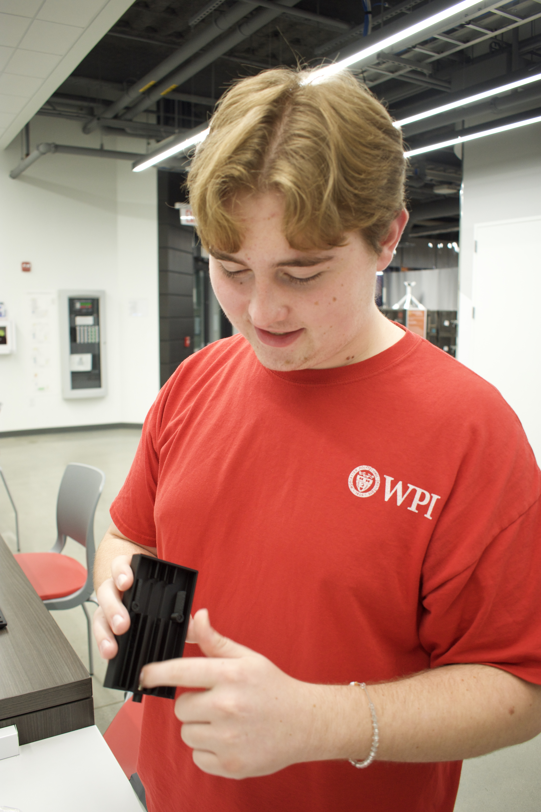

Aaryan Panchal
CHIEF EXECUTIVE OFFICERLeads strategy and operations. Owns the path from prototype to FDA submission and brings the team together around a single, uncompromising mission: get epinephrine into pockets.
Four founders, one stubborn question, and the realization that the most life-saving device in modern medicine fails the people it's meant to save , every single day.
Why are EpiPens so inconvenient and easy to forget , when forgetting one is the difference between a normal afternoon and a hospital bed?
, The question that started EpiSafe
The EpiPen has barely changed since 1987. Six inches long. Awkward to pocket. Designed to live in a backpack that you don't always grab.
So the data ends up where you'd expect: 56% of people prescribed an EpiPen don't carry one. 225 preventable deaths every year in the U.S. alone. A $1.2 billion annual cost from anaphylaxis-related care , most of it because someone, somewhere, left their device on a kitchen counter.
Anaphylaxis can kill in minutes. The device meant to stop it shouldn't have a "but I left it at home" failure mode.

Every part inside an auto-injector was designed around a six-inch tube. We didn't try to shrink it , we redrew the geometry, simulated the fluid dynamics, and validated dose equivalence against a standard intramuscular injection.
Then we did the harder part: we put it in a phone case. The device people carry 100 times a day now carries the device that saves their life.

Computer-simulated fluid dynamics for the modified delivery path. Custom mechanical components designed to fit the case form factor without compromising spring force. Drop, temperature, and wear testing in the conditions phones already survive.
We've filed a provisional patent on both the utility and the design. Next: FDA pre-submission, formal trials, and manufacturing partnerships. We're not running a sprint , we're building something people will trust with their lives.



A treatment you don't carry
is no treatment at all.
A team built across operations, science, design, and revenue , meeting at the intersection of medical rigor and product obsession.
Leads strategy and operations. Owns the path from prototype to FDA submission and brings the team together around a single, uncompromising mission: get epinephrine into pockets.

Runs day-to-day operations and partnerships. Has spent the last nine months turning the engineering pipeline, regulatory roadmap, and supply chain from spreadsheets into a working plan.

Owns industrial design and the digital product. Responsible for every line, curve, and pixel that makes EpiSafe feel less like a medical device and more like something you actually want to carry.

Builds the go-to-market motion: pharmacy partnerships, prescriber relationships, and the direct-to-patient channel. Translates 56% who don't carry into 56% who will.
We're early. We're moving fast. And we'd love to hear from anyone who can help us get there.